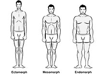

How much time does it take to build muscle?
The question that every person asks before stepping into fitness, How much time is it going to take me to build a physique like that? We all like the saying that 'patience is the key to everything good in life' but most of us bake a different opinion when it comes to bodybuilding, we want good results in a short amount of time and that is definitely possible but as we all know it depends. Now let's explore the answers to what it depends upon?
There are three types of physiques into which every person can be differentiated.

Ectomorph - Ectomorphs are the people whom we refer to as skinny dudes with rapid metabolism and long limbs and small joints. Due to fast metabolism, the glycogen in the body gets rapidly converted to energy thus making it hard for the ectomorphs to gain muscle.
Mesomorph - Mesomorphs are the people that have an ideal body shape with broad shoulders and thin waist and they neither look too skinny or too fat. They have stable metabolism with balanced consumption to exhaustion ratio thus making it easier for them to gain muscle.
Endomorph - Endomorphs are the people with most of their body fat accommodated around the abdominal region and hips. They have a rounded body with small shoulders and limbs. They have trouble losing weight due to slow metabolism thus making it difficult for them to shed fat and gain muscle.
Another factor that muscle gain depends upon is the natural levels of testosterone produced in the body. Testosterone is an androgenic male hormone that is responsible for male characteristics including bigger muscles. Testosterone plays a major role in protein synthesis and helps in forming muscle fibers, highs levels of testosterone result in a faster gain of muscle mass.
Figure out what type of body-type you fall into and read further to learn how much time is it gonna take you to gain noticeable muscle mass.
ECTOMORPH
Higher calorie intake.
More protein consumption.
Heavy compound lifts.
Less cardio.
MESOMORPH
Maintain a slight calorie surplus(200-400 calories).
Don't go overboard with protein consumption as your body is already programmed to absorb more protein.
Maintain a balance between weightlifting and cardio.
ENDOMORPH
Maintain a calorie deficit.
Moderate protein consumption.
Strength training with compound lifts.
Extended sessions of cardio.
HIIT(High-Intensity Interval Training) 2-3 times/week.
As blunt as it sounds ectomorphs have to put in a lot of training and sweat into building muscle as they carry the metabolism of a car engine, the body doesn't get enough time to absorb and synthesize all the essential nutrients required for muscle gain and to exasperate they have low levels of testosterone resulting in less testosterone to synthesize the protein. Factors that ectomorphs should keep in mind to accelerate muscle growth are:
If all the factors are properly maintained and taken care of ectomorphs can see visible muscle gain in 6-8 months.
The best somatotype that every person dreams of is a mesomorph. Mesomorphs are the genetic lottery winners with balanced metabolism and high levels of testosterone they flaunt their broad shoulders and slim waist with pride but that doesn't mean that they don't have to put in the effort required to build a physique. The potential benefits of being a mesomorph are that they have to put in lesser efforts than ectomorphs and endomorphs, they tend to shed fat quickly and build muscle faster. But certain factors can help mesomorphs quickly progress with the process:
If all the above factors are properly dealt with mesomorphs can see visible muscle gain in 2-3 months.
Finally the endomorphs, they have a big window for easy muscle gain but they also accumulate fat easily. Endomorphs are generally pear-shaped big people who tend to put on weight rapidly as a direct result of slow metabolism. But endomorphs are at a greater advantage as compared to ectomorphs as they also have a stable mechanism required to put on muscle mass. If a fitness regime is executed properly by endomorphs, they can shed that excess body fat easily and put on some lean muscle mass paving way for a quality physique.
If all the above points are followed than endomorphs can expect to see visible muscle gain in 3-4 months.
As an ending note, it doesn't matter what body-type you may fall in, the effort endured will always serve as a measuring milestone to the quality of success you can expect as an outcome. Put your foot on the paddle and keep grinding until you reach your goal, it's gonna ultimately pay off, and if you are lucky enough you are gonna witness a more subtle feeling , the feeling of satisfaction. Don't let your genetics hold you back, take advantage of the resources, find solutions to problems, and note what works for you and if you are stuck we are always here to help.
Stay fit and stay healthy.